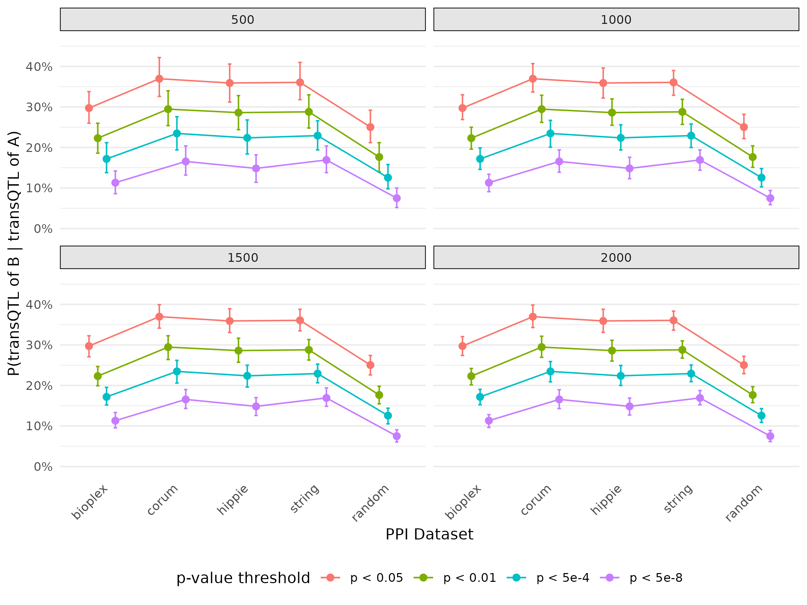

Last updated: 2025-06-25
Checks: 7 0
Knit directory: GradPLog/
This reproducible R Markdown analysis was created with workflowr (version 1.7.1). The Checks tab describes the reproducibility checks that were applied when the results were created. The Past versions tab lists the development history.
Great! Since the R Markdown file has been committed to the Git repository, you know the exact version of the code that produced these results.
Great job! The global environment was empty. Objects defined in the global environment can affect the analysis in your R Markdown file in unknown ways. For reproduciblity it’s best to always run the code in an empty environment.
The command set.seed(20220610) was run prior to running
the code in the R Markdown file. Setting a seed ensures that any results
that rely on randomness, e.g. subsampling or permutations, are
reproducible.
Great job! Recording the operating system, R version, and package versions is critical for reproducibility.
Nice! There were no cached chunks for this analysis, so you can be confident that you successfully produced the results during this run.
Great job! Using relative paths to the files within your workflowr project makes it easier to run your code on other machines.
Great! You are using Git for version control. Tracking code development and connecting the code version to the results is critical for reproducibility.
The results in this page were generated with repository version 7afa9e6. See the Past versions tab to see a history of the changes made to the R Markdown and HTML files.
Note that you need to be careful to ensure that all relevant files for
the analysis have been committed to Git prior to generating the results
(you can use wflow_publish or
wflow_git_commit). workflowr only checks the R Markdown
file, but you know if there are other scripts or data files that it
depends on. Below is the status of the Git repository when the results
were generated:
working directory clean
Note that any generated files, e.g. HTML, png, CSS, etc., are not included in this status report because it is ok for generated content to have uncommitted changes.
These are the previous versions of the repository in which changes were
made to the R Markdown (analysis/rotation.Rmd) and HTML
(docs/rotation.html) files. If you’ve configured a remote
Git repository (see ?wflow_git_remote), click on the
hyperlinks in the table below to view the files as they were in that
past version.
| File | Version | Author | Date | Message |
|---|---|---|---|---|
| Rmd | a0a1f62 | zq2209 | 2025-06-25 | update rotation page |
| html | a0a1f62 | zq2209 | 2025-06-25 | update rotation page |
| Rmd | ae3d616 | zq2209 | 2025-06-25 | update rotation page |
| html | ae3d616 | zq2209 | 2025-06-25 | update rotation page |
| Rmd | 1d71192 | zq2209 | 2025-06-25 | update rotation page |
| Rmd | bd405e1 | zq2209 | 2025-06-25 | update rotation page |
| html | bd405e1 | zq2209 | 2025-06-25 | update rotation page |
| Rmd | 509f6ca | zq2209 | 2025-06-25 | update rotation page |
| html | 509f6ca | zq2209 | 2025-06-25 | update rotation page |
| Rmd | 783dfdb | zq2209 | 2025-06-25 | add ppi rotation project |
Investigate potential mechanisms that may underlie genetic variants that affect a gene’s protein expression level in trans, but not its mRNA expression level.
Curate databases that capture different mechanisms including annotated strict protein complex partners, many different methods that identify protein-protein interaction networks, known signaling pathway, and more.
Develop approaches that may help distinguish trans-pQTLs that are driven by cell-composition effects versus intra-cellular trans-pQTL effects
PPI
Bioplex: ~ 2900 pairs after overlapping with pQTL data
Hippie: ~ 1346 pairs after overlapping
Corum: ~ 1270 pairs after overlapping
String: ~ 6750 pairs after overlapping
Gene module
DNG gene module by trans-PCO:
166 gene modules
12000+ genes in total
over 1,000,000 gene pairs
QTL summary statistics
UKB-PPP: plasma
DGN: whole blood
For each gene/protein pair, pick up the SNP from the most significant transQTL (i.e. smallest pvalue) of gene/protein A.
For gene/protein B of this gene pair, pick up pvalue of QTL for this SNP and B.
After fisrt 2 steps, there will be a pair of pvalues, then calculate the proportion that both pvalues are significant under certain pvalue threshold, i.e. the probability of there is transQTL for B given there is transQTL for A.
Use bootstrap to somehow mimic the distribution of the probability. For each dataset, each time select certain number of pairs and calculate probability of this dataset. From boostrap, there will be distribution of probability, able to estimate standard errors and construct confidence intervals.
Note: Not sure about which pvalue threshold and sample size of bootstrap, so have results for multiple pvalue thresholds and boostrap sample sizes.

The overall trend as expected, PPI pairs have higher probability then random pairs. And the error bar decrease as sample size of bootstrap increase.
| Dataset | Total | trans.cis |
|---|---|---|
| bioplex | 5800 | 21 |
| corum | 2542 | 25 |
| hippie | 2692 | 11 |
| random | 4471 | 6 |
Note: Total pairs is the number of unique pairs * 2
Different tissue of PPI datasets:, e.g whole blood cells for bioplex and general cells for others
Different tissue in pQTL and eQTL data
Summarize the gene pair result
Probability of transQTL of B given cisQTL for A, and any other possible combination
Any other PPI module
R version 4.4.3 (2025-02-28)
Platform: aarch64-apple-darwin20
Running under: macOS Sequoia 15.5
Matrix products: default
BLAS: /Library/Frameworks/R.framework/Versions/4.4-arm64/Resources/lib/libRblas.0.dylib
LAPACK: /Library/Frameworks/R.framework/Versions/4.4-arm64/Resources/lib/libRlapack.dylib; LAPACK version 3.12.0
locale:
[1] en_US.UTF-8/en_US.UTF-8/en_US.UTF-8/C/en_US.UTF-8/en_US.UTF-8
time zone: America/Chicago
tzcode source: internal
attached base packages:
[1] stats graphics grDevices utils datasets methods base
other attached packages:
[1] kableExtra_1.4.0 knitr_1.50
loaded via a namespace (and not attached):
[1] jsonlite_2.0.0 compiler_4.4.3 promises_1.3.3 Rcpp_1.0.14
[5] xml2_1.3.8 stringr_1.5.1 git2r_0.36.2 later_1.4.2
[9] jquerylib_0.1.4 textshaping_1.0.1 systemfonts_1.2.3 scales_1.4.0
[13] yaml_2.3.10 fastmap_1.2.0 R6_2.6.1 workflowr_1.7.1
[17] tibble_3.2.1 rprojroot_2.0.4 svglite_2.2.1 bslib_0.9.0
[21] pillar_1.10.2 RColorBrewer_1.1-3 rlang_1.1.6 cachem_1.1.0
[25] stringi_1.8.7 httpuv_1.6.16 xfun_0.52 fs_1.6.6
[29] sass_0.4.10 viridisLite_0.4.2 cli_3.6.5 magrittr_2.0.3
[33] digest_0.6.37 rstudioapi_0.17.1 lifecycle_1.0.4 vctrs_0.6.5
[37] evaluate_1.0.3 glue_1.8.0 farver_2.1.2 whisker_0.4.1
[41] rmarkdown_2.29 tools_4.4.3 pkgconfig_2.0.3 htmltools_0.5.8.1